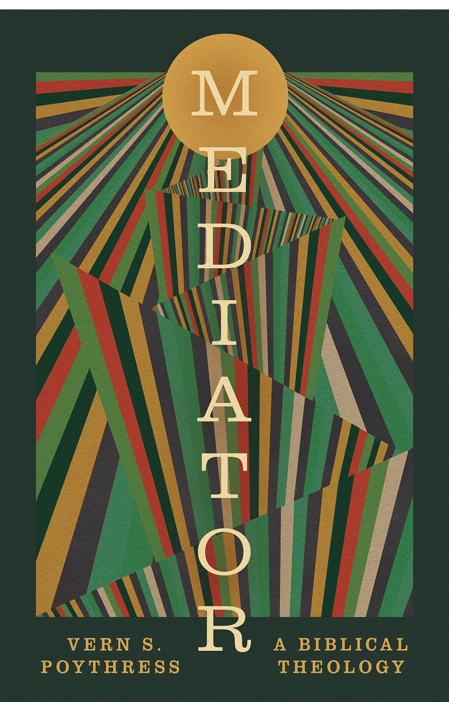

Mediator: A Biblical Theology
Poythress does what he does best: patiently tracing a single thread — mediation — from Eden to the cross until you can't unsee it.

Vern S. Poythress · Crossway · Biblical Theology
Some biblical theologies try to do everything at once and leave you holding a tangle of threads. This one pulls a single cord — the theme of mediation — and follows it with the patience Poythress is known for. The result is a book you can hand to a thoughtful layperson and still find rewarding as a pastor.
What it does well
Poythress moves through people, angels, and even objects (the ark of the covenant, the tabernacle) that stand between God and his people, showing how each anticipates and finally gives way to Christ, the one true Mediator. The payoff isn't merely academic: by the end you read the Old Testament differently, with an eye for how it keeps pointing beyond itself.
Accessible enough for a small group, rich enough for a pastor's study.
Who it's for
Pastors planning a sermon series in the Pentateuch or the Gospels will find a wealth of connective tissue here. Small-group leaders can use it to lift a study above moralism. And any reader who has felt lost in the middle of the Old Testament will come away with a map.
The verdict
A model of how biblical theology should serve the church, not just the academy. If you buy one Crossway title from this season's calendar, make it this one.
Disclosure: Pulpit & Page may earn a commission from purchases made through the links above, at no extra cost to you. Our opinions are our own.